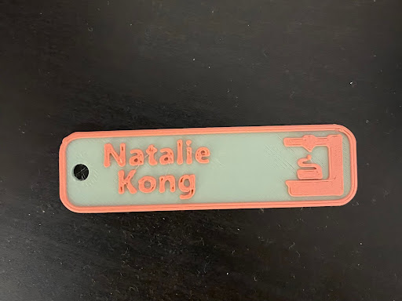

My first project in ENGR11A introduced me to the basics of 3D printing, a skill entirely alien to me prior to this experience. The project began with downloading PrusaSlicer, the software associated with relaying prints to the Original PrusaMini+ 3D printers used for the purpose of this lab.
The Name Tag
 The small name tag - the length of my thumb - shows off my name and a stylized 3D printer with surprisingly fine accuracy.This name tag was my first 3D print job on the PrusaMini, and the product of a surprisingly simple transition from digital file to tangible object. Its creation first taught me the controls for the PrusaSlicer software. I had to import the pre-crafted file of the name tag from the internet, then edit the text on the name tag to be customized to my name. Then I “sliced” the file, initiating a process that converted the 3D object to layers of 2D instructions for the PrusaMini to deposit plastic to. Then the sliced file was uploaded to a flashdrive that could then carry the instructions to the printer it is plugged into.
My first attempt at printing the name tag is actually not pictured as I forgot to photograph it before recycling. Pictured above is the second attempt. The first name tag was monochromatically green, as I had not yet tackled changing filament color; this was the purpose of reprinting. The second name tag involved introducing a color change from green to pink by controlling the amount of layers in the sliced file, thus instructing the PrusaMini to initiate a color change at a certain level halfway through the print (this would involve my manual ejection and reinsertion of filament).
The process of printing also involves checking the product for clues to the condition of the machine and its calibration. The second name tag turned out beautifully, with a clean color change and clear, smooth edges. Notably, there were some gaps between the lines filling the flat surface of the name tag, which could hint towards the extrusion multiplier (flow rate) of plastic extrusion being too low, but this was not a setting on the printer that I was comfortable with changing as over-extrusion has more drastic consequences for the quality of the print. Furthermore, I did not want to interfere with the perfectly precise and clean edges seen on this print. Overall, this experience was my initiation into 3D printing, and left me with a lovely customized item!
The Torture Test/Calibration Test
 The torture test features every structure that, by nature of material and method, 3D printers would struggle with. This textured square doesn’t bother with decoration or fun like some other torture tests, instead getting straight to labeled business.
The torture test features every structure that, by nature of material and method, 3D printers would struggle with. This textured square doesn’t bother with decoration or fun like some other torture tests, instead getting straight to labeled business.
This “torture test”, or calibration test, was the next stage of my printing project. This print taught me the most about the technicalities of initiating a print, as I spent the most time here calibrating the printer and also inspecting the successes and shortcomings of the final product. The calibration process involved a mesh bed leveling, which scans the base on which prints are built to account for warps and imperfections, and a Z-axis manual calibration, which is a process of manually adjusting the height of the printer’s nozzle. The latter took significantly more time and analysis of the printer nozzle’s height and then careful adjustment. Too low and the extrusion would come out thin and flat, potentially leaving marks in the final piece; too high and the extrusion would come out stringy, and overhangs and fine details would suffer.
The outcome of the calibration test was surprisingly incredibly successful! The crisp text, fine details, and near-perfect overhangs say a lot about the impressive capabilities of this 3D printer. It also demonstrates quite clearly exactly what the strengths and limitations of 3D printing as a medium are, too, and reminds one why 3D printing is never recommended for more than the prototyping stage of design. I was surprised by the amount that the printer struggled with fine text, especially raised text (compared to engraved text), as the labels become barely legible as they shrink in size. However, the engraved text was perfectly clear and held up to smaller sizes. This is likely due to the width of the filament and nozzle used, and how the space between extrusions (engraved text) can be controlled more finely than the space of the extrusion itself (raised text, which cannot be thinner than the nozzle). More expectedly, the printer did struggle a little with overhangs, but held up remarkably. The overhang bars reaching up to 10mm have no issues at all, and the overhang arches hold up with crisp and smooth surfaces all the way until the 80° angle — nearly parallel to the bottom! — where the filament layers began drooping more.
To go places and do things that have never been done before – that’s what living is all about.
Space, the final frontier. These are the voyages of the Starship Enterprise. Its five-year mission: to explore strange new worlds, to seek out new life and new civilizations, to boldly go where no man has gone before.
As I stand out here in the wonders of the unknown at Hadley, I sort of realize there’s a fundamental truth to our nature, Man must explore, and this is exploration at its greatest.